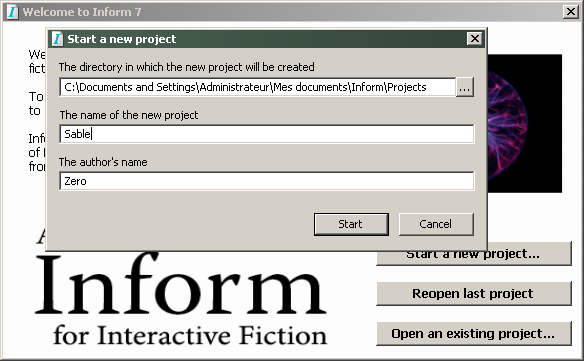
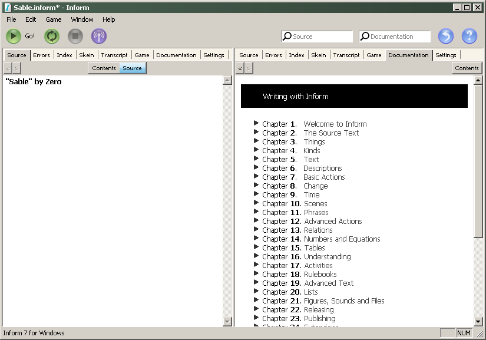
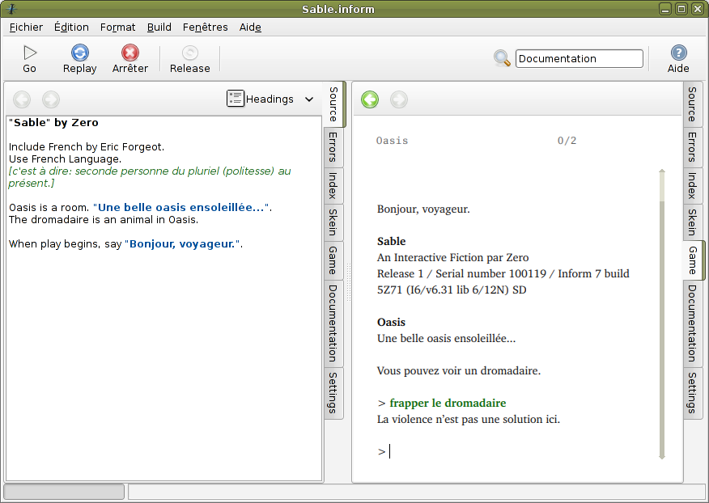

Inform 7 est un langage de programmation permettant de créer des mondes imaginaires, de les remplir d'objets et de personnages, et par ce biais, de créer des histoires, des aventures et des jeux.
Ces jeux sont également nommés fictions interactives.
Mais à la différence des jeux modernes impliquant des effets 3D, des animations, des images et du son, les fictions interactives utilisent uniquement du texte pour communiquer avec le joueur et lui décrire son environnement, comme dans un livre, et l'unique moyen d'entrer des commandes pour le joueur est de les taper au clavier.
Il est néanmoins possible d'y ajouter de façon optionnelle des images, des musiques ou des sons.
Inform 7 est un des systèmes les plus efficaces et modernes pour créer ce type de jeux.
Il est composé :
d'un environnement graphique de développement (IDE) pour écrire le code, interpréter le jeu et avoir accès à la documentation ainsi qu'à divers modules (comme par exemple la liste des relations entre les objets, la liste des verbes, l'arborescence des choix possibles etc).
d'un compilateur permettant de créer le fichier d'histoire dans un langage machine spécial, qui sera interprété ensuite.
de bibliothèques permettant de décrire les règles qui régissent le monde.
Ce petit guide ne prétend pas se substituer au manuel, très complet, fourni avec le logiciel. Par contre c'est le premier du genre qui aborde, en français, une initiation à Inform 7, qui donnera les bases nécessaires pour concevoir un univers textuel. Le lecteur pourra ensuite se référer au manuel officiel, et à ses nombreux exemples commentés, pour en savoir plus.
À la fin de sa lecture, le lecteur sera en mesure de créer lui-même une petite aventure de ce type : Jouer à "Sable" en ligne
La principale originalité d'Inform 7 est que le code de programmation est à écrire dans un langage naturel déclaratif, au lieu d'utiliser un langage de bas niveau procédural, impératif, comme pour le C par exemple (ou comme son prédécesseur Inform 6).
Mais n'espérez pas pouvoir écrire vos instructions en français, la seule langue utilisable est l'anglais, comme pour la plupart des autres langages de programmation.
Exemple de code minimaliste, l'équivalent du "Hello World" :
"Bonjour monde" by "Zero"
Univers is a room.
When play begins, say "Bonjour, monde."
Bien entendu, vous pourrez obtenir au final un jeu entièrement francisé, le langage de programmation étant séparé des bibliothèques francophones existantes.
Mais plutôt que de disserter sur la technologie sous-jacente, entrons directement dans le vif du sujet, et créons déjà notre première petite histoire.
Installation d'Inform 7
En premier lieu, téléchargeons Inform 7 sur le site officiel :
et plus précisément à la page http://inform7.com/download/ choisissez la version pour votre système d'exploitation : Mac OS X, Windows, Linux ou autre. (Dans la suite des copies d'écran, nous présenterons indifféremment ces 3 systèmes existants)
Une fois l'installation réalisée, démarrez le logiciel, et sélectionnez par exemple :
Start a new project...
Mettez votre projet de jeu dans le dossier :
C:\Documents and Settings\utilisateur\Mes documents\Inform\Projects sous windows
ou bien ~/Inform/Projects sous linux ou mac os x
Et appelez-le "Sable". Choisissez également votre nom de plume.

L'interface est séparée en deux fenêtres, comme dans un livre ouvert.
La page de gauche est généralement utilisée pour taper le code, et la page de droite pour visualiser le jeu ou lire la documentation. Il est également possible d'obtenir en vis à vis deux fenêtres de sources pour comparer du code, ou encore pour visualiser deux modules différents à la fois, en sélectionnant les onglets se trouvant à côté (mac os x, linux) ou au-dessus des fenêtres (windows)
Ces modules sont respectivement :
Source (Source du jeu)
Errors (Erreurs de compilation)
Index (Index des lieux, des objets, des verbes etc.)
Skein (cheminement sous forme d'arborescence)
Transcript (transcription du jeu = solution)
Game (affichage du jeu)
Documentation (documentation de la syntaxe et de l'utilisation d'inform 7)
Settings (options)

Pour le moment nous nous concentrerons sur les onglets Source et Game, qui sont les plus importants. Lorsque vous aurez un peu plus d'aisance avec Inform, vous pourrez découvrir les autres modules (certains sont très optionnels, comme le Skein et le Transcript)
Premier code
Nous allons reprendre l'exemple de code précédent, en le modifiant un peu (les crochets dans le code, lorsqu'ils ne sont pas à l'intérieur de guillemets, signifient un commentaire qui ne sera pas interprété) :
"Sable" by Zero
Oasis is a room. "Une belle oasis ensoleillée...".
The dromadaire is an animal in Oasis.
When play begins, say "Bonjour, voyageur.".
et cliquez sur "Go!" pour compiler le jeu. Vous verrez sur la page de droite s'afficher le résultat :
Bonjour, voyageur.
Sable
An Interactive Fiction by Zero
Release 1 / Serial number 100118 / Inform 7 build 5Z71 (I6/v6.31 lib 6/12N) SD
Oasis
Une belle oasis ensoleillée...
You can see a dromadaire here.
Argh, nous avons du français et de l'anglais mélangé et ce n'est pas ce que nous souhaitons !
En effet, Inform 7 étant à la base tout en anglais, il n'a pas encore moyen de savoir que nous voulons que le jeu soit en français pour toutes nos réponses, ce qui est normal. Aussi, à l'exception des chaînes de caractères que nous avons écrites nous-même en français, tout le reste sera traité en anglais.
Mais même si ce n'est pas encore parfait, vous pouvez commencer dès maintenant à interagir avec cette histoire en franglais, en tapant des instructions (instructions pour le moment en anglais), avec une phrase après le signe > (appelé le prompt), et le résultat s'affichera sur la ligne en dessous, par exemple :
>examine dromadaire
You see nothing special about the dromadaire.
Installation de l'extension francophone d'Inform 7
Inform 7 utilise un système d'extensions qui permet de lui rajouter des fonctionnalités. Ainsi, pour franciser Inform 7, il suffit de télécharger l'extension French.i7x sur le site officiel et de la sauvegarder sur votre disque :
Ensuite dans Inform 7, allez dans le menu File > Install extension... > et choisissez le fichier French.i7x que vous venez de télécharger.
Maintenant, rajoutez :
Include French by Eric Forgeot.
Use French Language.
au début de votre code précédent, ce qui donne au final :
"Sable" by Zero
Include French by Eric Forgeot.
Use French Language.
[c'est-à-dire : seconde personne du pluriel (politesse) au présent.]
Oasis is a room. "Une belle oasis ensoleillée...".
The dromadaire is an animal in Oasis.
When play begins, say "Bonjour, voyageur.".
Si nous compilons de nouveau le jeu avec "Go" nous obtenons maintenant :

Oasis
Une belle oasis ensoleillée...
Vous pouvez voir un dromadaire.
Vous avez maintenant toutes les répliques du jeu en français ! De plus, vous pouvez interagir avec l'histoire en tapant vos commandes en français. Par exemple :
>examiner le dromadaire
Rien de particulier concernant le dromadaire.
>embrasser le dromadaire
Concentrez-vous sur le jeu.
>frapper le dromadaire
La violence n'est pas une solution ici.
Ici, comme nous n'avons rien précisé de plus, nous obtenons les réponses-types prévues dans Inform 7 (et plus précisément dans les traductions de l'extension francophone).
Revenons un peu sur le code utilisé pour placer les objets dans le jeu, et expliquons le un peu mieux, même si le langage naturel permet de comprendre aisément les instructions.
Pour créer une "pièce" (a room) au sens large, c'est-à-dire un endroit, il suffit d'indiquer le nom de la pièce, suivi de "is a room", par exemple "Oasis is a room". On peut faire suivre la description de cette pièce entre guillemet, ou implicitement déclarer :
The description of NomDeLaPiece is "Ma description de cet endroit".
Les phrases pouvant facilement se permuter et se déplacer dans la majorité des cas, cela peut être une bonne idée de préciser à chaque fois la description d'un objet au lieu d'utiliser la version courte, mais c'est une question de préférence.
Pour créer un objet (c'est-à-dire un personnage ou une chose), il suffit d'indiquer le nom suivi de "is in NomDeLaPiece". Même syntaxe pour la description.
Pour donner des attributions spécifiques à un objet, il suffit de rajouter man, woman, animal ou thing après "is", par exemple : "is an animal in Oasis".
Cela permettra de donner des réponses types plus adaptées à la nature de ces objets (qu'ils soient animés ou inanimés). Ainsi, pour un être vivant, la réponse par défaut à l'action "toucher" sera "Tenez vos mains tranquilles", alors que pour un objet inanimé cela sera "Vous ne sentez rien de particulier".
Ces objets sont en fait appelés par des variables que nous venons d'initialiser.
La phrase suivante :
When play begins, say "Une introduction..."
est juste un code pour demander d'exécuter quelques commandes au début du jeu. Ici cela ne fait qu'afficher un petit texte d'introduction, mais on peut imaginer placer là certaines initialisations supplémentaires.
Rajoutons maintenant un autre objet dans cette oasis.
The palmier is a thing in Oasis.
Ce palmier est très bien, mais il y a un petit problème de conception : Essayez de le prendre avec la commande "prendre le palmier" une fois la nouvelle version du jeu compilé, et vous vous entendrez dire "D'accord". En consultant votre inventaire avec ">Inventaire" (abbrégé par "i"), vous le trouverez effectivement dans vos affaires :
>i
Vous avez:
un palmier
Les propriétés
Les objets définis comme être vivants ne pourront pas être transportable par défaut (c'est une question de savoir-vivre...) Pour obtenir la même caractéristique sur un objet inanimé, il suffit de dire qu'il est "fixed in place" (fixé sur place).
The palmier is a thing in Oasis. It is fixed in place.
que l'on peut simplifier par :
The palmier is fixed in place in Oasis.
Pour ajouter du réalisme, on peut également rajouter du sable :
The sable is fixed in place in Oasis.
Le problème, c'est que maintenant le jeu nous annonce :
Vous pouvez voir un dromadaire, un palmier et un sable.
Au niveau de l'article de ce cas particulier, "un sable" n'est pas correct puisqu'il faut un article partitif. Pour simuler cela avec Inform 7, il faut rajouter :
The indefinite article of sable is "du".
Ce qui affichera un résultat correct.
Ensuite, si le sable n'est pas un objet que l'on souhaite mettre en avant lors des descriptions (c'est évident qu'il y a du sable dans un désert et une oasis), il peut être intéressant de le masquer dans les descriptions, tout en permettant au joueur d'interagir avec lui (l'examiner, le toucher etc.)
Pour cela, on utilise la propriété (en anglais property, que l'on peut voir en fait comme des adjectifs) nommée "scenery".
The sable is scenery in Oasis.
Cette propriété contient déjà la notion de "fixed in place", donc ce n'est pas la peine de le rajouter.
Mieux, si nous souhaitons créer un objet qui se répétera dans plusieurs endroits à la fois (comme le sable, le soleil, le ciel...), on peut utiliser la propriété "backdrop" à la place (en effet, un objet normal, scenery par exemple, ne pourra pas être dans plusieurs pièces en même temps).
The sable is backdrop in Oasis, in Désert and in Crypte.
The soleil is backdrop in Oasis and in Désert.
Enfin, en plus des propriétés existantes avec des règles prédéfinies par Inform 7, on peut en créer soi-même, et les utiliser soit dans des tests avec des conditions, soit pour établir une règle de conduite générale. Nous verrons ceci plus tard, mais voyons brièvement comment créer une nouvelle propriété :
A person can be dead. A person is usually not dead.
A person can be happy. A person is usually happy.
ce qui signifie que lorsqu'on créé un nouveau personnage, il sera toujours vivant et joyeux. On a utilisé les mots "dead" et "happy" pour ne pas perturber l'écriture du code en mélangeant le français et l'anglais, mais on aurait pu écrire "mort" et "joyeux" à la place, ou même "zedfzg" et "ftagg", du moment qu'on s'y retrouve avec cela ensuite... (on indiquera plus loin comment séparer encore plus les mots français et anglais dans le code)
L'interconnexion des lieux
Nous venons de faire référence à 2 nouveaux lieux, mais ils ne sont pas encore reliés au lieu de départ. On peut implémenter cela en rajoutant la direction géographique avec "autre_lieu is south from NomDeLaPiece", par rapport à un ou d'autres lieux. Par exemple :
The crypte is south from oasis.
The Désert is south from crypte and north from oasis and west from oasis and east from oasis.
On peut ainsi créer tout un monde avec des lieux, des connexions, des objets, des personnages. Mais ce monde reste terriblement statique car on n'a pas encore vu comment modifier les réponses par défaut, qui limitent le joueur en ne lui permettant de ne rien faire de spécial avec, ni de provoquer des réponses s'adaptant en fonction de l'action envisagée.
Pour cela on peut utiliser la construction avec "before" :
before taking [something]:
say "Ma réplique super drôle.";
stop the action.
Qui signifie : avant de faire une action sur quelque chose (ici prendre quelque chose): dire "Ma réplique super drôle."; arrêter cette action. [Sous entendant : ne pas afficher la réplique par défaut, qui n'est sans doute pas adaptée.]
Ce sont en fait des exceptions à la règle générale qui elle ne provoque qu'un message bateau.
La ponctuation pour les exceptions est :
deux points à la fin de before
un point virgule à la fin d'une partie d'action qui n'est pas terminée
et un point final lorsqu'on n'a rien à ajouter à cette action.
Ce genre d'exception pourra être adapté pour empêcher le message "C'est fixé sur place" lorsqu'on essaye de prendre du sable, puisque s'il n'y a pas d'intérêt particulier à prendre du sable dans le désert, ce n'est pas parce qu'il est "fixé sur place". Essayons d'écrire à la place :
before taking sable:
say "Il n'y a pas de technocrate ici pour essayer de lui vendre votre sable, et vous n'avez de toute façon pas de récipient pour l'emporter.";
stop the action.
Ce qui remplacera le message par défaut par votre réplique super drôle ;)
On peut également demander à continuer avec le message (et l'action) par défaut si celui-ci nous convient. Par exemple supposons que l'on crée un objet comme un cimeterre (une sorte d'épée courbe), et que l'on veuille rajouter un message avant que le système réponde qu'on vient de le prendre avec nous :
The cimeterre is a thing in crypte. The description of cimeterre is "Une belle épée à la lame courbe et damassée qui scintille de mille feux.".
before taking cimeterre:
say "Cette épée légendaire vous avait toujours fasciné, et maintenant vous pouvez enfin mettre la main dessus.";
continue the action.
Le "continue the action" autorise l'action par défaut qui place l'objet dans l'inventaire du joueur. Si notre message devait indiquer à la place "Cette épée est maléfique, et vous refusez de prendre le risque de souffrir de sa malédiction", vous auriez pu mettre à la fin "stop the action" pour empêcher le joueur de prendre effectivement l'épée. Pour ce type d'action de blocage, on peut écrire plus simplement avec "instead" :
Instead of taking [something], say "Description de ce qui se passe.".
à la place de :
before taking [something]:
say "Description de ce qui se passe.";
stop the action.
Pour éviter que ce message n'apparaisse à chaque fois que le joueur repose puis reprend l'épée, ce qui en ridiculiserait l'effet, on peut préciser que le message n'apparaît que la première fois que l'épée est prise, avec la précision "for the first time" :
Instead of taking [something] for the first time, say "Description de ce qui se passe.".
De la même manière que "before" et "instead of", on peut utiliser la structure "after", qui déclenchera une action après que l'action par défaut se soit exécutée.
After taking cimeterre, say "Bon ben finalement c'est pas si impressionnant que cela de porter cette épée, mais qu'est-ce qu'elle est lourde !".
Quelques astuces à savoir
Apprendre à connaître les verbes utilisables
Pour connaître la syntaxe précise (en anglais) d'une action dont on souhaite modifier le rendu par défaut, il est possible de taper la commande de déboggage "actions" puis de tester cette action dans l'interpréteur du jeu. Par exemple supposons que l'on cherche à chevaucher le dromadaire : quel verbe utiliser pour qu'Inform 7 comprenne cela ?
On obtient ainsi :
> actions
Actions listing on.
> grimper sur dromadaire
[climbing le dromadaire]
Je ne pense pas que l’on puisse arriver à grand-chose de cette manière.
[climbing le dromadaire - failed the block climbing rule]
> monter sur le dromadaire
[entering le dromadaire]
Vous ne pouvez pas y monter.
[entering le dromadaire - failed the can’t enter what’s not enterable rule]
On sait maintenant que ces 2 verbes sont gérés par "climbing" et "entering". Le verbe "entrer" peut sembler étrange ici, mais c'est un verbe générique utilisé pour entrer dans un fauteuil ou un objet ayant normalement la propriété "container" par exemple.
Concrétisons donc cela par :
Instead of climbing or entering dromadaire, say "L'animal ne se laisse pas faire.".
Les synonymes
Nous avons enfin une petite saynète fonctionnelle, il nous reste une nouvelle chose à régler pour rendre le jeu encore plus attrayant : imaginons que le joueur souhaite faire référence à l'objet cimeterre en l'appelant "épée" ou "lame" par exemple. Pour permettre des synonymes, suffit juste de rajouter ce type de structure utilisant "understand" :
Understand "epee/lame" or "lame courbe" or "damas" as cimeterre.
Ne plus avoir à mélanger des mots français et anglais
On pourrait objecter, à juste titre, qu'il est assez perturbant d'écrire du code mélangeant à la fois du français et de l'anglais. Un langage bas niveau comme le C ne donne pas cette impression car les instructions tapées ne sont pas en langage naturel, et se bornent à quelques mots simple (if, void, for...), voire à des symboles ou abréviation (printf, =<...). Le plus flagrant dans Inform 7 est lorsqu'on en arrive à taper par exemple "The sable is in Désert ".
Une solution est alors de séparer le code (c'est-à-dire les mécanismes du jeu y compris les variables) d'un côté, et de l'autre les chaînes qui définissent ce que le joueur va lire. Ainsi, on peut utiliser les variables "sand" et "desert" (sans accent), et afficher entre guillemet la traduction souhaitée de l'objet avec : The printed name of my_object is "mon objet" (cela fonctionne également avec les lieux). Mais il ne faut pas non plus oublier de rajouter le synonyme équivalent. Cela rallonge un peu le code au final, mais vous pourrez ainsi choisir la méthode que vous souhaitez en fonction de vos préférences.
Complétons donc notre histoire maintenant. Définissons notre cahier des charges :
Le héros, c'est-à-dire le joueur, est le prince de Perse, le fameux "prince of Persia". Il arrive dans une oasis, entourée de désert, et s'apprête à entrer dans une crypte ancienne contiennant un cimeterre mythique nommé le "Shamshir". Lorsqu'il y pénètre, la porte se referme et le seul moyen de sortir est de fouiller les murs jusqu'à trouver une encoche qui sert d'interrupteur pour rouvrir la porte. Lorsque celle-ci s'ouvre, un démon apparaît, un "Div". Le héros doit s'en débarrasser avec son épée. Une fois ceci fait, il peut repartir, mais pas à dos du dromadaire qui se trouve dans l'oasis, il doit trouver son cheval, ce qui convient mieux à sa lignée. Le jeu peut alors se terminer avec une victoire du joueur.
Les conditions
Il nous manque un concept essentiel pour pouvoir voler de nos propres ailes : les tests et conditions. Comme dans beaucoup d'autres langages de programmation, cela va se faire avec des "if". Même s'il existe des variantes, la syntaxe de base est :
Before action en cours:
if quelquechose à tester
[commencer] begin;
dire "quelque chose.";
action;
[sinon] otherwise;
dire "autre chose.";
action;
[fin du test] end if.
par exemple on peut imaginer coder la partie avec l'interrupteur de la porte ainsi :
Instead of inserting cimeterre into murs:
if the stone door is locked
begin;
say "Vous glissez votre cimeterre dans l'interstice entre les deux pierres, et la porte s'ouvre de nouveau.";
now stone door is unlocked;
now stone door is open;
otherwise;
say "Il ne se passe rien de spécial.";
end if.
Les propriétés "locked", "unlocked", "open" définissent l'état d'un objet "porte", que l'on n'a pas étudié pour le moment, mais dont vous imaginerez aisément l'utilisation. Le "now ..." permet de modifier l'état d'un objet rajoutant en cours de jeu de nouvelles propriétés et en en annulant d'autres.
Les scènes
Si on a vu au début comment organiser spatialement le jeu, on n'a pas encore abordé comment l'organiser temporellement. Les scènes dans Inform 7 permettent de créer des moments particuliers durant lesquels des événements peuvent se dérouler, provoqués par une occasion donnée. On peut comparer cela à un acte dans une pièce de théatre : lorsque tel personnage ouvre son courrier ou pousse un cri, un autre acteur arrive sur scène et ainsi de suite.
Par exemple dans notre jeu on pourra créer une scène qui débute lorsque le joueur entre dans la crypte (ou bien lorsqu'il prend l'épée), et qui se termine lorsqu'il arrive à trouver le mécanisme d'ouverture de la porte, ou encore lorsqu'un certain temps s'est écoulé. Finalement, nous décidons qu'il peut être intéressant de démarrer la scène au moment où le joueur met la main sur l'épée, ce qui ferme la crypte et il ne pourra se libérer de cela que lorsqu'il aura manipulé les murs, mais la scène se terminera au bout de 10 tours de jeu. À l'issue de cette scène, qui représente ici un temps imparti, si le joueur n'est pas assez rapide, il manquera d'air, sinon il ne se passera rien de plus :
Enfermé is a scene. Enfermé begins when the player is carrying the cimeterre for the first turn.
Enfermé ends when the time since Enfermé began is 10 minutes.
When Enfermé begins:
Now the stone door is closed;
Now the stone door is locked.
Every turn during Enfermé:
say "L'air commence à manquer...".
When Enfermé ends:
if the stone door is locked
begin;
say "Vous ne pouvez plus respirer. Cette crypte sera votre tombeau.";
end the game in death;
end if.
(Les minutes représentent ici les tours de jeu).
On peut tester des conditions tous les tours pendant une scène particulière (et même pendant tout le jeu).
Tout ceci n'est pas très compliqué, mais cela reste un volume dense d'information à digérer, aussi je préfère montrer que cela existe et vous laisser vous référez au manuel officiel chapitre 10 pour en apprendre plus.
Terminer le jeu
C'est bien de commencer un jeu, mais il faut également pouvoir récompenser le joueur, soit par un score (optionnel, aussi nous n'en parlerons pas ici), mais surtout par une fin de jeu.
Pour dire que le jeu est gagné, on indique : "End the game in victory." Et s'il est perdu, on indique : "End the game in death." Si la fin est mitigée, on peut simplement indiquer "End the game saying "Explication..." "
"Sable" by Zero
Include French by Eric Forgeot.
Use French Language.
Part 1 - Configurations et initialisations générales
Release along with a website and the source text.
A person can be dead. A person is usually not dead.
[à utiliser avec les monstres de notre histoire]
Every turn:
Before doing something to someone (called individu):
if individu is dead
begin;
say "Cette créature est morte, laissons-la en paix.";
stop the action;
otherwise;
continue the action;
end if.
[chaque tour de jeu cela vérifiera que l'on n'essaye pas de faire une action sur une créature
avec l'attribut 'dead', auquel cas cela remplacera tous les messages par défaut
(intégré à la bibliothèque de base francophone) par un laconique 'Cette créature est morte, laissons-la en paix.']
Instead of going nowhere, say "Sans cheval, vous ne pouvez risquer de vous aventurez dans le désert seul.".
[permet d'expliquer pourquoi le joueur ne peut aller dans une direction qui n'existe pas (=nowhere)]
When play begins:
say "Bienvenue aventurier. Vous êtes le prince de Perse, et au cours d[']une partie de chasse dans la forêt,
votre cheval vous a désarçonné. Vous avez alors erré à sa recherche, jusqu[']à atteindre une oasis.".
Part 2 - Les objets et les lieux
Chapter 1 - L'Oasis
Oasis is a room. "C[']était une belle oasis ensoleillée mais maintenant le soleil va déclinant...
Il y a le désert tout autour d[']ici, à l[']exception d[']une forêt à l[']est, mais au sud descend un chemin en
direction d[']une crypte. La forêt n[']est pas sûre en fin de journée.".
Forêt is a room. Forêt is east from Oasis. Instead of entering forêt, say "La nuit va bientôt tomber, et la jungle
est la plus dangereuse à ce moment, autant rester dans le désert, essayer de retrouver votre cheval, ou explorer les environs.".
The dromadaire is an animal in Oasis.
The cheval is an animal.
[on ne place pas encore le cheval dans les lieux connus, on le fera venir plus tard, à la fin du jeu]
The description of cheval is "Votre cheval est un splendide Akhal-Teke.". Understand "akhal-teke" or "akhal" or "akhal teke" as cheval.
Instead of climbing or entering cheval:
say "Vous remontez sur votre cheval, et retournez enfin à votre palais.";
end the game in victory.
Instead of climbing or entering dromadaire, say "Vous, un prince, n[']oseriez certainement pas
retourner à votre palais à dos de dromadaire ![if cheval is not in location]Mais où est donc votre cheval ?[end if]".
[ce type de code est un moyen de faciliter un test de condition impliquant uniquement du texte,
on aurait pu l'écrire autrement, mais cela aurait été plus long.]
Instead of attacking dromadaire:
say "Le dromadaire n[']a pas apprécié, et il vous le rend bien, avec un coup de sabot bien placé.";
end the game in death.
The palmier is a thing in Oasis. It is fixed in place.
The description of palmier is "Un palmier qui oscille au gré du vent.".
Understand "arbre" as palmier.
The chemin is scenery in Oasis. The printed name of chemin is "chemin vers la crypte".
Understand "crypte" as chemin. [va servir dans le cas où le joueur tape 'suivre le chemin, entrer dans la crypte']
Before entering chemin:
try going south;
stop the action.
The sable is backdrop in Oasis, in Desert and in Crypte. The indefinite article of sable is "du".
Before taking sable:
say "Il n[']y a pas de technocrate ici pour essayer de lui vendre votre sable,
et vous n[']avez de toute façon pas de récipient pour l[']emporter.";
stop the action.
Instead of searching sable, say "Autant chercher une aiguille dans une botte de foin.".
The div is an animal. The description of div is "Un démon sanguinaire à la face simiesque et aplatie qui ne vous fera pas de quartier.".
Understand "monstre/demon" or "demon sanguinaire" as div.
Instead of attacking div:
if the player is carrying cimeterre
begin;
say "[one of]La lame l[']élève dans les airs, légère comme une flamme, et retombe sur le div,
le blessant gravement.[or]Vous fendez comme si vous étiez le vent,
perçant votre ennemi et réduisant ses attaques à néant.[or]Vous vous battez bien, vous sentez votre avantage.[stopping]";
decrease the attaque of div by 2;
otherwise;
now the attaque of div is 4; [accélère la fin du joueur]
say "Vous n[']irez pas loin avec vos petits poings...";
end if.
[on n'a pas vu l'arithmétique dans Inform 7, mais cela se retrouve dans le chapitre 14 du manuel d'inform, en particulier la section 14.16]
Desert is north from oasis and northwest from oasis and west from oasis. The printed name of desert is "Désert".
Chapter 2 - La crypte
The stone door is a door. It is female, unlocked and open. It is north from crypte and south from oasis.
Understand "porte/seuil" as stone door. The printed name of stone door is "porte".
Oasis is outside from crypte. [permet d'autoriser le joueur à quitter la crypte en disant juste "sortir"]
Instead of opening or closing the stone door when the stone door is open, say "C[']est trop lourd pour vous, de plus elle est déjà ouverte.".
Instead of opening or closing the stone door when the stone door is not open, say "C[']est trop lourd pour vous.".
The crypte is a room. The description of crypte is
"Un silence de mort règne en ces lieux, et le murmure enjoué du vent n[']arrive pas jusqu[']ici.".
The momie is a woman in crypte. The momie is dead. The description of momie is
"En temps normal cela ne ferait pas aussi peur, mais il faut bien avouer
que dans ces lieux l[']évocation de la mort prend une autre dimension.".
Before examining momie, say "[description of momie]".
[On aurait pu se passer de cela si la momie n'avait pas l'attribut "dead",
qui court-circuite le message de description. Ici avec un "before",
cela prend le pas sur la règle énoncée plus haut au sujet des créatures mortes.]
The cimeterre is a thing in crypte. The description of cimeterre is
"Une belle épée à la lame courbe et damassée qui scintille de mille feux.".
Some murs are scenery in crypte. "Les murs sont recouverts de carreaux en terre cuite
qui représentent des dieux et des animaux fabuleux. Il y a également une partie qui
est restée en pierre brute.". Understand "dieux" or "animaux" or "animaux fabuleux" or "mur/interstice/pierre/pierres" as murs.
Instead of searching or touching murs, say "À un certain endroit, il y a une interstice plus marquée entre deux pierres.".
Understand "epee/lame/shamshir" or "lame courbe" or "damas" or "shamshir" as cimeterre
Before taking cimeterre for the first time:
say "Cette épée légendaire vous avait toujours fasciné,
et maintenant vous pouvez enfin mettre la main dessus.";
continue the action.
Instead of inserting cimeterre into murs:
if the stone door is locked
begin;
say "Vous glissez votre cimeterre dans l[']interstice entre les
deux pierres, et la porte s[']ouvre de nouveau.";
now the stone door is unlocked;
now stone door is open;
otherwise;
say "Il ne se passe rien de spécial.";
end if.
Understand "planter [cimeterre] dans [something]" or "glisser [cimeterre] dans [something]" as inserting it into.
[on rajoute ces synonymes pour permettre plus de possibilités de choix au joueur.]
Part 3 - Les scènes
Enfermé is a scene. Enfermé begins when the player is carrying the cimeterre for the first turn.
Enfermé ends when the time since Enfermé began is 10 minutes.
When Enfermé begins:
say "Au moment où vous prenez l[']épée, la porte donnant vers l[']extérieur se referme !";
Now the stone door is closed;
Now the stone door is locked;
move Div to oasis.
Every turn during Enfermé:
if the stone door is closed, say "L[']air commence à manquer...".
When Enfermé ends:
if the stone door is locked
begin;
say "Vous ne pouvez plus respirer. Cette crypte sera votre tombeau.";
end the game in death;
end if.
Bataille is a scene. Bataille begins when the player is carrying cimeterre and the location is oasis.
The div has a number called attaque. The attaque of div is 1.
Bataille ends when the div is dead.
When bataille begins:
say "Le div fonce vers vous !".
Every turn during Bataille:
if the attaque of div is less than 4
begin;
say "[one of]Vous feriez bien de trouver un moyen de vaincre ce monstre !
[or]Il fait tournoyer son poing au-dessus de sa tête.[or]Il pousse un grognement hideux.[stopping]";
increase the attaque of div by 1;
otherwise;
say "Il finit par vous attraper et vous dévorer !";
end the game in death;
end if;
if the attaque of div is less than 0, now the div is dead..
When bataille ends:
say "Le monstre s[']écroule lourdement, sans vie.";
say "Votre cheval arrive enfin, mais après la bataille !";
move cheval to oasis.
Part 4 - Test me
Test me with "aller au sud/prendre le cimeterre/fouiller les murs/
mettre la lame dans interstice/sortir/attaquer le div/encore/encore/monter sur le cheval".
Je vois qu'il manque un plan d'eau dans cette oasis ! Je vous laisse vous en charger vous-même ? Vous pourrez par exemple traiter l'eau comme le sable, et rajouter en plus des exceptions si le joueur essaye de nager dedans ou de la boire.
Nous n'avons pas non plus abordé l'introduction de musiques et d'images statiques. C'est tout à fait possible, et pas vraiment difficile à faire, aussi le mieux sera de se référer au chapitre 21 du manuel officiel.
Nous remarquons également que les apostrophes sont écrits entre crochets ['], c'est nécessaire pour qu'ils ne se convertissent pas en guillemets. Il est possible d'utiliser un script (pour linux et mac os x) pour transformer automatiquement ces apostrophes dans le bon format à la fin de la création du jeu.
Une fois notre petite aventure réalisée, il reste à voir comment la rendre jouable par le reste du monde.
Les privilèges du démiurge
Avant cela, il est possible de tester le cheminement du joueur au travers de certaines commandes, pour vérifier rapidement que le jeu est finissable, ou pour atteindre instantanément certaines zones ou certains objets.
La procédure de test automatique implique de rajouter dans le code cette partie :
Test me with "aller au sud/prendre le cimeterre/fouiller les murs/mettre la lame dans interstice/sortir/attaquer le div/encore/encore/monter sur le cheval".
Ainsi, durant le jeu, en tapant "test me", chaque commande sera automatiquement tapée à la suite des autres.
On peut également créer des batteries de tests avec des parties différentes à tester, par exemple :
Test me with "test one/test two".
Test one with "aller au sud/prendre le cimeterre"
Test two with "ouvrir la porte/frapper la porte"
Test three with "toucher la momie/fouiller les murs"
Ces commandes de déboggage ne seront bien entendu pas disponibles lorsque le jeu final sera sorti (voir plus bas).
Ensuite, les commandes "gonear objet" permettent de se déplacer instantanément d'un endroit à un autre. À l'inverse, "purloin objet" permet de mettre dans son inventaire n'importe quel objet que l'on veut tester durant la conception du jeu.
Publier le jeu
Il existe le bouton "Release" (l'icône violette sous Windows et Mac OS X), qui va créer un export direct sous forme de fichier de jeu, et cette version sera sans les commandes de déboggage.
Ce fichier de jeu généré sera jouable en ligne sous ces conditions :
Dans le cas de notre jeu "sable", il sera jouable à cette adresse : Sable en ligne
Nous vous conseillons le logiciel Gargoyle à installer pour lire vos jeux sous windows et linux.
Vous pourrez expliquer à vos joueurs que c'est similaire à ce qu'on retrouve par ailleurs : pour lire un document en vidéo sur ordinateur il faut utiliser un type de logiciel (lecteur vidéo), et pour lire un document de texte il en faut un autre (traitement de texte).
Mais s'ils préfèrent ne rien avoir à installer, il reste la version en ligne.
Nous avons terminé ce survol des bases d'Inform 7, et cet ouvrage aurait sans doute nécessité beaucoup plus de place pour développer toutes les fonctionnalités étonnantes de ce langage. Néanmoins, nous espérons que cela pourra donner à certains l'envie d'en savoir plus, et de débuter la rédaction de fictions interactives passionnantes !
Une version augmentée de ce manuel paraîtra peut-être dans le futur, en fonction de la réception de cette première version.